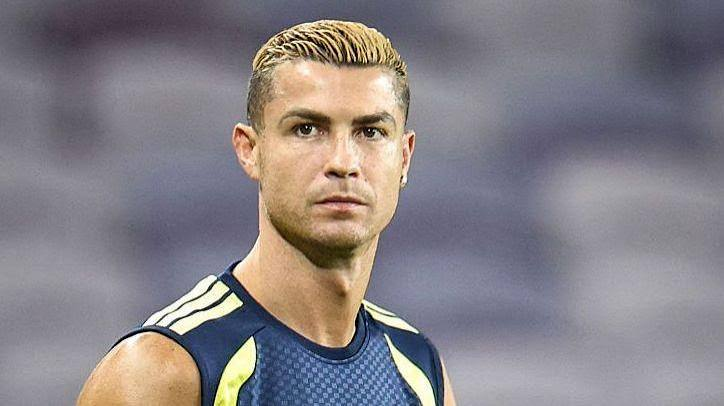

Standing on the Shoulders of Giants
We are all shaped by the people we look up to. For me, the person who has influenced my life map the most is Cristiano Alvero dos Santos Ronaldo.
Ronaldo is an athlete known for his incredible resilience, creativity, kindness.
The most profound lesson I learned from watching his journey is that "Hard work pays"
.
Whenever I face a difficult decision or an unexpected setback, I reflect on how they handle adversity with grace. Their legacy serves as my daily reminder to stay true to my values and work hard.
ABOUT CR7
Cristiano Ronaldo dos Santos Aveiro (born 5 February 1985) is a Portuguese professional footballer who plays as a forward for and captains the Saudi Pro League club Al-Nassr. Nicknamed CR7 (an abbreviation of his initials and shirt number), he has won numerous individual accolades throughout his career, including five Ballons d'Or, a record three UEFA Men's Player of the Year Awards, and four European Golden Shoes. He was named the world's best player five times by FIFA, and is widely regarded as one of the greatest footballers of all time.
Ronaldo is one of the most decorated players in the history of professional football. His 35 trophies include five UEFA Champions Leagues, two UEFA Nations Leagues and the UEFA European Championship. He is the only player to have scored 100 goals with four different clubs and to finish as the top scorer in four different domestic leagues. He has made over 1,300 professional career appearances, the most by an outfield player, and has scored over 970 official senior career goals for club and country, making him the top goalscorer in the history of the sport.
Ronaldo began his career with Sporting CP before signing with Manchester United in 2003. He helped the club win three consecutive Premier League titles, the 2007-2008 Champions League, and the 2008 FIFA Club World Cup. For his performances in 2007-2008, Ronaldo was awarded his first Ballon d'Or at age 23. In 2009, he joined Real Madrid in a deal worth €94 million (£80 million), which was the most expensive transfer in history at the time. He helped Madrid win four Champions Leagues and two La Liga titles, and became the club's all-time top goalscorer. He joined Juventus in 2018 and helped them win two consecutive Serie A titles and the Coppa Italia. He returned briefly to Manchester United before joining Al-Nassr in 2023. He was the Saudi Pro League's top scorer in 2024 and 2025, and led Al-Nassr to the league title in 2026.
Ronaldo made his debut for Portugal in 2003 at the age of 18. He helped them reach the final of Euro 2004, and was named captain ahead of Euro 2008. He led Portugal to victory at Euro 2016 and at the UEFA Nations League in 2019 and 2025. Ronaldo holds the records for most international appearances, most men's international goals (146), and most international victories (141). He was named in the UEFA Ultimate Team of the Year in 2015, the All-time UEFA Euro XI in 2016, and the Ballon d'Or Dream Team in 2020. In recognition of his record-breaking goalscoring success, he received special FIFA awards for Outstanding Career Achievement in 2021.
Ronaldo was ranked by Sportico as the third highest-paid athlete of all time in April 2026, and appeared on Forbes' The World's Billionaires list the same year, with a net worth of $1.2 billion. Time included him on its list of the 100 most influential people in the world in 2014. Ronaldo is the most popular athlete on social media, with over 1 billion followers across Facebook, Twitter, YouTube, and Instagram.